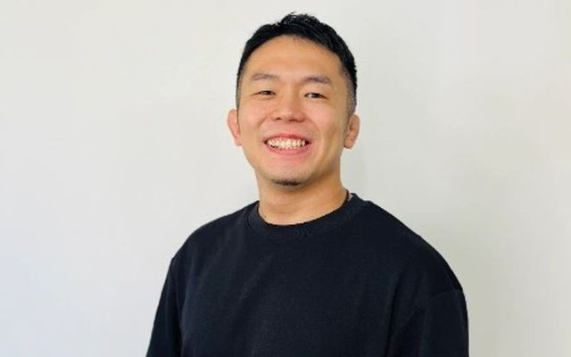
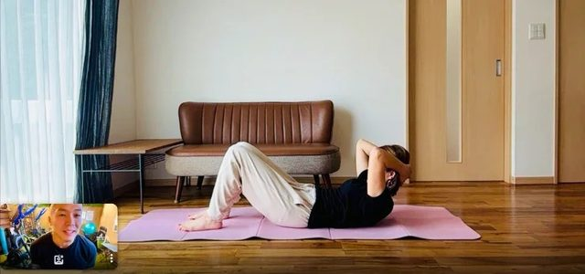
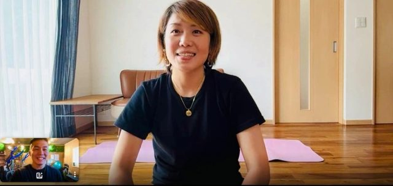
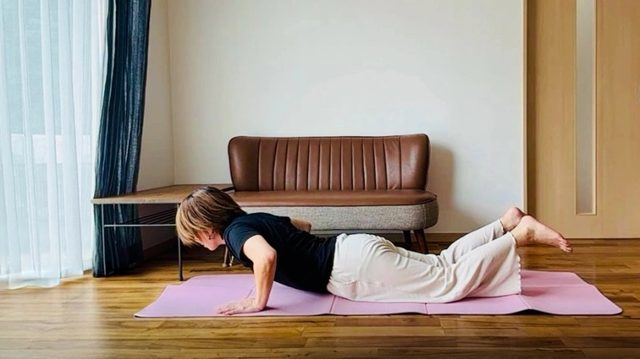

自宅で三日坊主を卒業するための、
３ヶ月プログラム。
自動車の教習所の様に、パーソナルトレーニングと自主トレを組み合わせながら、3ヶ月間で、じぶんでトレーニングを続けられるようにしていくオンラインプログラムです。
パーソナルトレーニングとの違い
E.Sではパーソナルトレーニングに加えて、より多くの方に運動習慣を作って頂きたいと思い、卒業型の「じぶとれ教習所」をスタートしました。
どちらも担当するトレーナーは同じです。
パーソナルトレーニング
- ✓毎回トレーナーが付きっきり
- ✓トレーナーとの細かい予定調整が必要
- ✓通い続ける事が前提
- ✓月謝制・チケット制
じぶとれ（オンライン卒業プログラム）
- ✓トレーナーに依存し過ぎない設計
- ✓3ヶ月卒業型
- ✓卒業後は予定調整不要
- ✓オンライン完結
こんな悩み、ありませんか？
- ✓ジムに入会したけど、3ヶ月で行かなくなった
- ✓YouTubeを見ながらやってみたが、習慣にならなかった
- ✓誰かと一緒なら動けるのに、一人だと何もできない
- ✓子育てで忙しくて、自分のための時間が取れない
- ✓運動は好きじゃないけど、身体や健康の為に始めたい
じぶとれ教習所３つの特徴
徐々に手を離していく設計
一般的なパーソナルジムは、毎回トレーナーがいて当たり前。でもそれでは「一人でできるじぶん」にはなれません。じぶとれは2ヶ月目から、セッション開始時だけトレーナーと接続して、あとは自主トレで進める時間を意図的に作ります。3ヶ月かけて、少しずつ手を離していきます。
卒業が前提
じぶとれは、あなたが1人でもトレーニングを続けられるようになる状態を目指します。トレーニングを教えるだけでなく、負荷の決め方、忙しくて出来なそうな時の対策、挫折しないプログラム設計など長期的に継続する為の方法もプログラムに含み、あなたの卒業を徹底サポートします。

トレーナー自身も継続が苦手
じぶとれのトレーナーも「継続やがんばるのが得意じゃない側」。だからこそ運動が続かない人の気持ちを誰よりも理解しています。今までに400名以上の指導実績もあるので、初心者の方でもご安心ください。
今まで続かなかったのは、
仕組みが足りなかっただけかもしれません。
パーソナル
ジム
教習所
￥30,000〜￥50,000
3か月分
￥90,000〜￥150,000
3ヶ月の流れ

必要なトレーニングを覚える
週1回30分〜45分のオンラインパーソナルを実施。基本的な知識や正しいフォーム・強度を身につけていきます。

じぶんでやる準備を始める
隔週でパーソナルセッションと、スタートアップセッションを導入。スタートアップセッションは5分間トレーナーと接続し、今日やることや不安な点などを確認し、その後じぶんでトレーニングを実施してもらいます。

じぶんでやれる自信をつける
スタートアップ3回＋卒業セッション1回。じぶんでやってみて出た課題や疑問を修正し、頻度を増やして「もうトレーナーなしでも大丈夫」の状態を確認して卒業します。
受講した方の声
ジムに行く時間はないけど体を動かしたいと思って始めました。2ヶ月経って、トレーニングが習慣になったことが一番の変化です。
週2回の運動習慣が身につきました。始める前は続けられるか不安でしたが、記録を付けることで適度な強制力が働き、続けることができるようになりました。
継続が苦手なので続けられるか心配でしたが、丁寧にフォームを見ていただけて、フォームが身についたので忘れないように続けたいと意識が変わりました。
サポートがあってのことですが、初めて3ヶ月という期間、運動を続けられたという達成感を感じ、自信に繋がった所です。フォームや回数等を確認してもらうなかで、自分の感覚と先生の意見を照らし合わせる事で自分の現在値(出来てる部分と改善点)を確認出来たのも良かったです。
初回は数回こなすのがやっとだったトレーニングも、ある程度スムーズにこなせるようになり筋力がついてきた実感があります。スタートアップセッションがあることで「今日はやろう！」と思えます。
趣味程度ですがスポーツをしているのですが、身体全体的に筋力がアップしパフォーマンス向上に繋がりました！画面越しでも分かりやすく伝えてくださり、しっかり見て指導してくださったので効かせたいところに効いてる実感がありました。
トレーナー紹介

恥ずかしながら、トレーナーの私自身も運動を継続するのが苦手で、24時間ジムを1か月以内で辞めた経験もあります。だからこそ、続けられない人の気持ちが誰よりもわかります。現在、三日坊主さん専門のパーソナルジムを運営しながら、もっと多くの方に運動習慣をつくってほしいと思い、この「じぶんトレーニング教習所」を立ち上げました。
「続けられない」は、環境次第です。正しいやり方と続け方の仕組みがあれば、身体に変化が起き、多くの方が自然と続けられるようになります。自身の経験と継続が苦手な方を400名以上指導して来た経験から、あなたに合った「続く仕組み」を一緒に作ります。
料金
- ✓オンラインパーソナルセッション 計7回（各30〜45分・卒業セッション含む）
- ✓スタートアップセッション 計5回（各5分）
- ✓自主トレプログラムの作成
- ✓復習コンテンツ
一括払い：税込￥32,780
3回分割（3ヶ月の毎月払い）
月々税込￥11,000×3回
（総額税込￥33,000）
3ヶ月のプログラム修了時点で、ご自身で続ける自信が持てなかった場合、スタートアップセッション（5分）を最大4回、無料で追加します。
※自主トレの記録を付けていただいていた方が対象です。
じぶとれのサポートを充実させていくために、定員3名までとしています。
まずは無料体験でじぶとれを体験してみてください。
お申し込みからスタートまでの流れ
お申し込み
ページ内の申し込みボタンから、無料体験・カウンセリングの予約を行います。
無料体験・カウンセリング
オンラインで、簡単なカウンセリングと実際のトレーニングを体験します。これまで続かなかった理由も一緒に整理します。
ご検討
体験終了後、続けられそうかをご自身のペースでご検討ください。その場での申し込みは不要です。無理な勧誘はいたしません。
本格スタート
お申し込み後、3ヶ月のじぶとれプログラムが本格的にスタートします。
よくある質問
続けられるか不安です。
それがこのプログラムで一番多い不安です。でも「続けられない理由」は人によって違います。まず無料体験で、あなたが続かなかった理由を一緒に整理しましょう。実際に受講した方からも「記録を付けることで適度な強制力が働き、続けられるようになった」という声をいただいています。
オンラインでの指導はちゃんとしてもらえますか？
はい。トレーナーは普段からオンラインでのセッションを行っています。カメラ越しでもフォームの確認・修正は十分可能です。「運動経験がほぼない状態からオンラインで大丈夫かな」と感じていた方も、丁寧なフォーム確認で安心して続けられています。
年齢制限はありますか？
特にありません。50代・60代の方にもご参加いただいています。体力や可動域に合わせて種目を調整するので、年齢を理由に諦める必要はありません。
持病やケガ、体の不調があっても大丈夫ですか？
事前にお伺いした上で、種目やフォームを調整します。肩の可動域に制限がある方、産後で体型や体力が変化した方、膝や腰に不安がある方など、それぞれの状態に合わせてプログラムを組んでいます。
器具や特別な道具は必要ですか？
不要です。すべて自宅でできるメニューで構成しています。ヨガマットがあると便利ですが、なくても大丈夫です。
申し込んだら断れなくなりますか？
体験だけで終わってもまったく問題ありません。体験後にスタートするかどうかをお聞きすることはありますが、無理に申し込ませることはしません。
まずは、じぶんに合うか確かめるところから。
無料体験では、サービスの詳細と、実際に簡単に出来る運動を一緒に実施してもらいます。
その場での申し込まなくても大丈夫です。
所要時間 50分・オンライン／申込み後にURLを送付